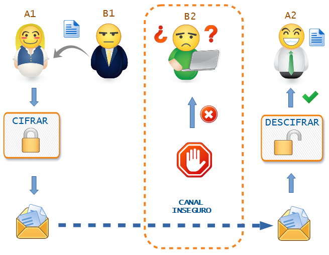

Ya hemos recordado algunas cosas que tenías olvidadas y que vas a necesitar. En este apartado vamos a experimentar con tu imaginación e inventando estratégias. Esta capacidad también vas a necesitarla para superar el reto final.
Ya hemos recordado algunas cosas que tenías olvidadas y que vas a necesitar. En este apartado vamos a experimentar con tu imaginación e inventando estratégias. Esta capacidad también vas a necesitarla para superar el reto final.
- No temas equivocarte.
- Tomate un tiempo suficiente pero tampoco te agobies si no se te ocurre nada al principio.
¿Empezamos a jugar?
1. El juego de los espías.
Seguro que recuerdas cuando de pequeño utilizabas algún truquito para que sólo algún compañero o compañera os entendiera. Por ejemplo, cambiar todas las vocales por la "i".
"Li llivii in Sivilli is ini mirivilli"
Vamos a divertirnos un poco al realizar un juego en grupo para comprobar tus habilidades:
Inventa: Con tu compañero o compañera (A1 y A2) formaréis el EQUIPO ESPÍA y en secreto, dedicando unos 15 ó 20 minutos como máximo, vais a inventar un sistema de encriptación, no demasiado complicado, pero algo mejor que el de la "i" del ejemplo. Ponle un poco de imaginación.
Ahora, con otro grupo de otros dos compañeros o compañeras (B1 y B2), van a ser el equipo SERVICIO SECRETO y vamos a jugar:
- Conocemos el mensaje. Un miembro (B1) del otro grupo se pondrá aparte contigo (A1) y te pasará una frase corta escrita en un papel, sin hablar con su compañero o compañera.
- Ciframos el mensaje. Con el sistema previamente inventado junto con A2, debes escribir frase que te ha pasado B1 encriptándola.
- Enviamos el mensaje. Después, pasarás el mensaje al otro miembro del otro grupo (B2) que lo intercepta y que debe intentar descifrar el mensaje escribiéndolo en un papel sin saber el sistema y sin haber hablado con su compañero o compañera (B1).
- Recibimos el mensaje. Tras un tiempo máximo acordado, B2 ahora pasará el mensaje a tu compañero o compañera (A2) que conoce el sistema y descifra el mensaje escribiéndolo en otro papel.
El siguiente esquema representa la secuencia a seguir por los personajes.

Finalmente se compararán los tres papeles: mensaje original, propuesta realizada por B2 y el resultado obtenido por A2.- ¿Ha conseguido B2 descifrar el mensaje?
- ¿Lo ha interpretado correctamente A2?
- Podéis repetir el juego pero ahora intercambiando los papeles de los equipos A y B.
¿Te has divertido?, ahora es el momento de la puesta en común con el resto de los equipos y de comparar los sistemas utilizados para ocultar el mensaje.
2. Identifico lo que tengo que hacer
Para poder realizar el reto es necesario tener una serie de conocimientos sobre el uso de sistemas de ocultación, las condiciones que afectan a la seguridad , etc.
Además, debes conocer algunas estrategias importantes como trabajar en grupo, observar, planificar, explorar, analizar y muchas más.
Pensar en situaciones parecidas en las que hayas tenido que usar estos conocimientos y estrategias puede ayudarte a resolver estas actividades.
Ya conoces qué reto te proponemos alcanzar y te acabamos de plantear una actividad que te acercará a la meta. Pero para tener éxito en tu camino, necesitarás algunas estrategias que te servirán para esta y otras tareas parecidas. Las irás descubriendo en un diario que llamamos tu Diario de Aprendizaje.
¡Te proponemos que lo abras y completes el PASO 1 (Identifico lo que tengo que hacer) del Diario de aprendizaje antes de empezar la actividad que acabas de leer!
Haz clic aquí para descargar tu Diario de Aprendizaje
Recuerda:
- Pregunta a tu profesor o profesora si lo vas a rellenar en papel o en el ordenador.
- Si lo rellenas en el ordenador, no te olvides de guardarlo en una carpeta que más tarde puedas localizar.
¡Ánimo, que lo harás genial!
¿Seré capaz de hacerlo?
Esta actividad de "El juego de los espias" parece divertida pero quizás, al intentar realizarla has sentido algunas dudas. Es normal que sintamos nervios o inseguridades cuando nos enfrentamos a tareas nuevas o que son complicadas. Podemos creer que no seremos capaces de enfrentarnos a ella de forma correcta.
Si completas el PASO 2 (¿Seré capaz de hacerlo?) del Diario de aprendizaje, podrás comprobar que solo con reflexionar sobre esto te ayudará a relajarte, a continuar con la actividad y completarla con éxito. También conseguirás sentir menos inseguridad cuando tengas que realizar las próximas actividades.
Recuerda:
- Pregunta a tu profesor o profesora si lo vas a rellenar en papel o en el ordenador.
- Si lo rellenas en el ordenador, no te olvides de guardarlo en una carpeta que más tarde puedas localizar.
¡Ánimo! ¡Seguro que te lo pasas fenomenal!